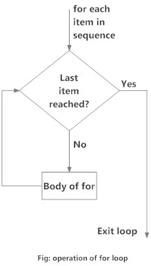

for Loop
What is for loop in Python?
The for loop in Python is used to iterate over a sequence (list, tuple, string) or other iterable objects. Iterating over a sequence is called traversal.
Syntax of for Loop
for val in sequence:
loop bodyHere, val is the variable that takes the value of the item inside the sequence on each
iteration.
Loop continues until we reach the last item in the sequence. The body of for loop is separated from the rest of the code using indentation.
Flowchart of for Loop

Example
# Program to find the sum of all numbers stored in a list # List of numbers numbers = [6, 5, 3, 8, 4, 2, 5, 4, 11] # variable to store the sum sum = 0 # iterate over the list for val in numbers: sum = sum+val print("The sum is", sum)When you run the program, the output will be:
The sum is 48
The range() function
We can generate a sequence of numbers using
range()function.range(10)will generate numbers from 0 to 9 (10 numbers).We can also define the start, stop and step size as
range(start, stop,step_size). step_size defaults to 1 if not provided.The
rangeobject is "lazy" in a sense because it doesn't generate every number that it "contains" when we create it. However, it is not an iterator since it supportsin,lenand__getitem__operations.This function does not store all the values in memory; it would be inefficient. So it remembers the start, stop, step size and generates the next number on the go.
To force this function to output all the items, we can use the function
list().The following example will clarify this.
print(range(10)) print(list(range(10))) print(list(range(2, 8))) print(list(range(2, 20, 3)))Output
range(0, 10) [0, 1, 2, 3, 4, 5, 6, 7, 8, 9] [2, 3, 4, 5, 6, 7] [2, 5, 8, 11, 14, 17]We can use the
range()function inforloops to iterate through a sequence of numbers. It can be combined with thelen()function to iterate through a sequence using indexing. Here is an example.# Program to iterate through a list using indexing genre = ['pop', 'rock', 'jazz'] # iterate over the list using index for i in range(len(genre)): print("I like", genre[i])Output
I like pop I like rock I like jazz